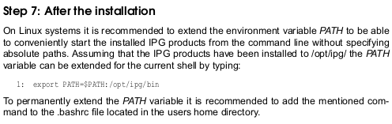
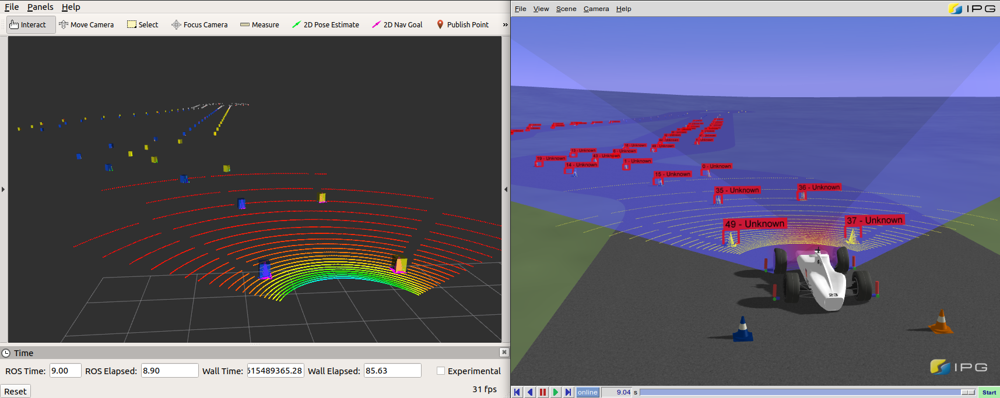
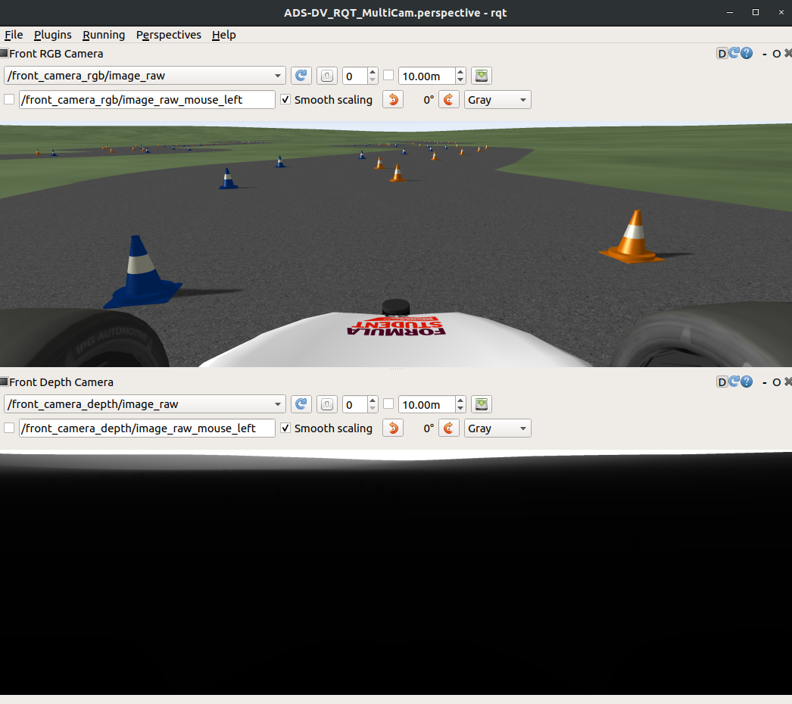
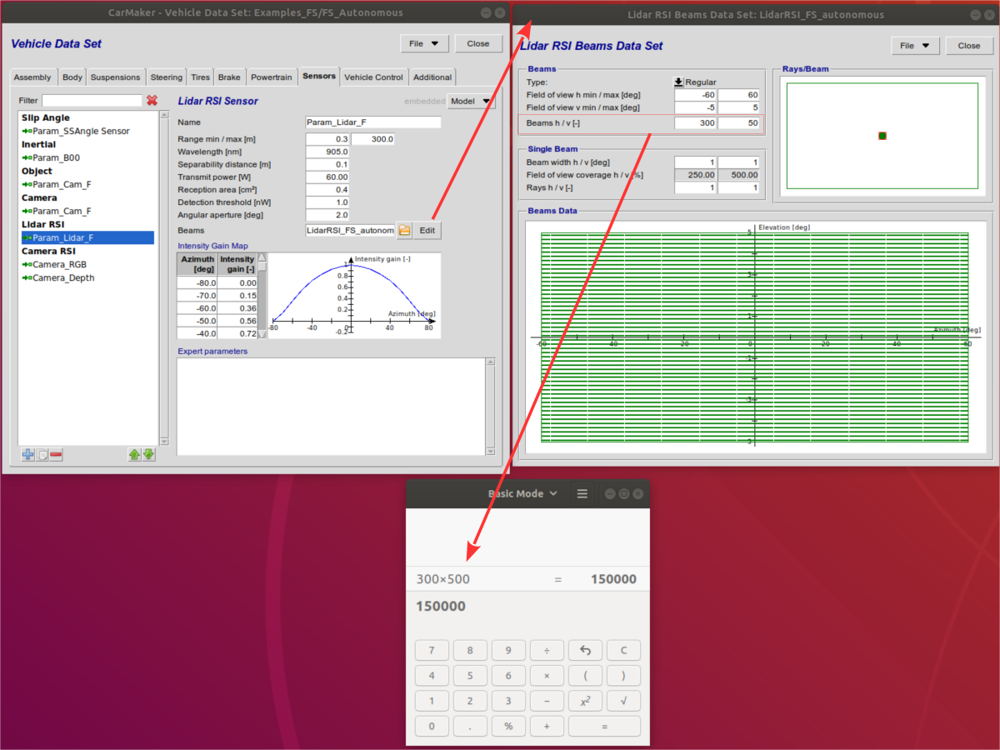
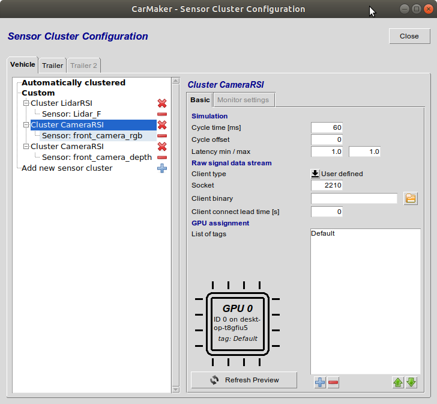
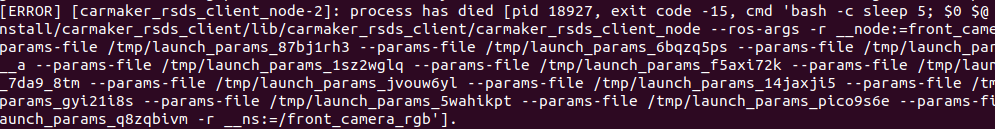

Table of contents generated with markdown-toc
This project provides an example implementation of CarMaker with ROS (CMRosIF), which has been extended from the standard 'hellocm' example on the IPG Website (FAQ section).
Linux Ubuntu 22.04
ROS2 Humble Hawksbill
CarMaker Office (Linux) 14.1.1
See CarMaker Release Notes and Installation Guide for proper installation procedure.
Ensure the following step is taken (excerpt from CarMaker Installation Guide):

The process for installing ROS2 is outlined in the respective ROS wiki page. For convenience the steps and some suggestions are available here as well:
It is highly recommended to setup a symbolic link for the currently preferred ROS2 installation to the respectively named folder. That makes switching between versions much easier in the future with respect to the build process of the CarMaker package.
The default installation folder for ROS is /opt/ros, and the recommended folder that CarMaker queries by default is /opt/ros/ros2 for ROS2. Thus the symbolic links would look like:
cd /opt/ros
sudo ln -sfn humble ros2
These are of course version-specific. The versions named here are the ones with which the package was officially tested and validated.
build.sh in a terminal (located on the top level of the project). This will build the ROS workspace (located in <project>/ros/ros2_ws), then the CarMaker application (located in <project>/src).CMStart.sh script on the top level of the project.
Main CarMaker GUI --> Extras --> CMRosIF --> Launch & Start Application. This will launch the ROS workspace from the hellocm.launch file, then Start and connect to the CarMaker application.Main GUI --> File --> Open --> Project --> FS_autonomous_TrackDrive.
SimStart.Anim.Wait = 300
You can either include the parameter from CM GUI -> Application -> Edit 'SImParameters' or you can find the SimParameters file from your project folder/Data/Config
This ensures RSI sensors have enough startup time to avoid timeout issues (ERROR GPUSensor A3:192.168...: Timeout) observed in some configurations on systems with limited GPU VRAM. foo@bar:~$ source ./ros/ros2_ws/install/setup.bash; ros2 topic list
/carmaker/Camera
/carmaker/ObjectList
/carmaker/VehicleControl
/carmaker/cm2ext
/carmaker/parameter_events
/carmaker/pointcloud
/carmaker/rosout
/clock
/front_camera_depth/camera_info
/front_camera_depth/image_raw
/front_camera_depth/parameter_events
/front_camera_depth/rosout
/front_camera_rgb/camera_info
/front_camera_rgb/image_raw
/front_camera_rgb/parameter_events
/front_camera_rgb/rosout
/hellocm/ext2cm
/hellocm/parameter_events
/hellocm/rosout
/parameter_events
/rosout
/tf
/tf_static
At this stage, the simulation is active and running. If you publish a /VehicleControl ROS message on the ROS2 network, the vehicle should move. This message is described in more detail in the example in Section 4.3.

6. If raw camera streams are desired, multiple CameraRSI sensors can be defined and mounted on the CarMaker vehicle frame. Currently these cameras can be either RGB (Coloration mode: Realistic) or Depth (Coloration mode: Depth linear gray). Every active camera will automaticall launch a separate external Raw Signal Data Stream client (ROS node) that recieves the raw data from the Camera RSI Sensors (aka Raw Signal Data Stream) in CarMaker, then publishes it to standard ROS image messages in the topics /<CAMERA_NAME>.
// ~Line 756
/* Do a system call to ros2 launch and launch the ROS node */
sprintf(sbuf, "ros2 launch carmaker_rsds_client carmaker_rsds_client.launch.py \
camera_no:=%d \
camera_name:=%s \
rsds_port:=%d \
param_trans_rot:=[%f,%f,%f,%f,%f,%f] \
fov_deg:=%f \
width:=%f \
height:=%f &",
Camera.number,
Camera.name,
Camera.Socket,
Camera.pos[0],Camera.pos[1],Camera.pos[2],Camera.rot[0],Camera.rot[1],Camera.rot[2],
Camera.FoV,
Camera.Resolution[0],
Camera.Resolution[1]);
system(sbuf);

For more information and troubleshooting on the RSDS ROS client nodes, see the corresponding README file in <project>/ros/ros2_ws/src/carmaker_rsds_client.
If you encounter issues during installation or when launching the project, please check the following notes collected from common user feedback.
If running ./build.sh gives Permission denied, the build script is missing execute permission.
Run the following commands once:
chmod +x build.sh ros/ros2_ws/build.sh
Then try again
./build.sh
colcon is required to build ROS2 packages as stated in Section 3.1. Install it with:
sudo apt update
sudo apt install python3-colcon-common-extensions
CarMaker 14.1.1 normally installs a symbolic link at /opt/ipg/bin/CM_Office-14.1.1 that points to the actual binary /opt/ipg/carmaker/linux64-14.1.1/bin/CM_Office.
If that link is missing, create it with:
sudo ln -s /opt/ipg/carmaker/linux64-14.1.1/bin/CM_Office /opt/ipg/bin/CM_Office-14.1.1
To make sure the command is always found, add the following lines to your ~/.bashrc:
# CarMaker 14.1.1 environment
export CM_HOME=/opt/ipg/carmaker/linux64-14.1.1
export CARMAKER_BASE=/opt/ipg/carmaker
export CARMAKER_VER=14.1.1
export PATH="/opt/ipg/bin:$CM_HOME/bin:$PATH"
export LD_LIBRARY_PATH="$CM_HOME/lib:$LD_LIBRARY_PATH"
export ROS_VERSION=2
# ROS2 Humble
source /opt/ros/humble/setup.bash
The CarMaker ROS Interface is meant to be modified by the user to publish and subscribe to data they need in ROS and CarMaker.
Most code changes in this example project are made in the following files:
<project>/ros/ros2_ws/src/hellocm_cmnode/src/CMNode_ROS2_HelloCM.cpp
<project>/ros/ros2_ws/src/hellocm_cmnode/src/CMNode_ROS2_HelloCM.hpp
These files are the source code for the internal node in CMRosIF used to communicate with all external ROS nodes via topics, services, etc. This node can be thought of as the port in and out of CarMaker. The standard example only publishes 'hello' messages back and forth between the CMNode and an example external node, along with simulation clock and an initialization topic to start the co-simulation with ROS.
In general, the process used to publish CarMaker data in ROS topics takes the following modifications (mostly in CMNode_ROS2_HelloCM.cpp):
Include necessary header files for CarMaker quantities and ROS message definitions at the beginning of the CMNode_ROS2_HelloCM.hpp file.
// ~Line 15
/* CarMaker
* - include other headers e.g. to access to vehicle data
* - e.g. "Vehicle.h" or "Vehicle/Sensor_*.h".
* - additional headers can be found in "<CMInstallDir>/include/"
* - see Reference Manual, chapter "User Accessible Quantities" to find some variables
* that are already defined in DataDictionary and their corresponding C-Code Name
*/
#include "Log.h"
#include "DataDict.h"
#include "SimCore.h"
#include "InfoUtils.h"
#include "apo.h"
#include "GuiCmd.h"
//CarMaker Header File Includes
#include "Vehicle.h"
#include "Vehicle/Sensor_LidarRSI.h"
#include "Vehicle/Sensor_Object.h"
#include "Vehicle/Sensor_Camera.h"
#include "infoc.h"
#include <math.h>
#include "Car/Car.h"
#include "Car/Brake.h"
#include "DrivMan.h"
#include "VehicleControl.h"
#include "Traffic.h"
/* ROS */
#include "cmrosutils/cmrosif.hpp" /* Only for CarMaker ROS Node!!! Functions are located in library for CarMaker ROS Interface */
#include "cmrosutils/srv/cm_remote_control.hpp" /* Basic service for CarMaker remote from ROS */
#include "sensor_msgs/msg/point_cloud.hpp"
#include "visualization_msgs/msg/marker_array.hpp"
#include "tf2_geometry_msgs/tf2_geometry_msgs.h"
#include "tf2_ros/transform_broadcaster.h"
#include "tf2_ros/static_transform_broadcaster.h"
#include <angles/angles.h>
#include "vehiclecontrol_msgs/msg/vehicle_control.hpp"
#include "camera_msgs/msg/camera_detection_array.hpp"
Create a CMJob publisher in CMNodeHelloCM::userTestrunStartAtBegin() and add it to the scheduler. The Doxygen documentation CMJobScheduler.html supplied with this project contains a full list of available methods for the RosPublisher class.
// ~Line 497
{ /* set up cm2ext publisher + job */
typedef CMJob::RosPublisher<hellocm_msgs::msg::CM2Ext> cm2ext_t;
auto job = std::make_shared<cm2ext_t>(nhp_, "cm2ext");
job->setCycleTime(15000);
job->registerCallback(&CMNodeHelloCM::cm2extFillMsg, this);
scheduler_.addJob(job);
}
Create a callback for each published topic. The publisher callback fills the message to be piblished with desired data to be transmitted over ROS. Don't forget to declare callbacks in CMNode_ROS2_HelloCM.hpp as well.
// ~Line 432
void CMNodeHelloCM::cm2extFillMsg(hellocm_msgs::msg::CM2Ext& msg) {
msg.cycleno = static_cast<uint32_t>(rel_cycle_num_);
msg.time = rclcpp::Time(static_cast<int64_t>(1e9 * SimCore.Time), RCL_ROS_TIME);
msg.synthdelay = synth_delay_;
msg.header.stamp = rclcpp::Clock().now();
}
Delete all jobs in userTestrunEnd(), otherwise restarting the simulation will attempt to create a duplicate of an existing job.
// ~Line 840
scheduler_.deleteJob("cm2ext");
The CMRosIF 'Job' functions used are not required, but they help with error handling and cyclical publishing, so that data packaging and publishing doesn't need to be done every simulation cycle. This would cause potentially unnecessarily high publishing rates that reduce simulation efficiency.
Include necessary header files for CarMaker quantities and ROS message definitions at the beginning of the CMNode_ROS2_HelloCM.hpp file (see previous code snippets).
#include "VehicleControl.h"
...
#include "vehiclecontrol_msgs/VehicleControl_msgs.h"
Create a CMJob subscriber in CMNodeHelloCM::userTestrunStartAtBegin() and add it to the scheduler. The Doxygen documentation CMJobScheduler.html supplied with this project contains a full list of available methods for the RosSubscriber class.
// ~line 778
{ /* set up VehicleControl subscriber + job */
std::string topic = "VehicleControl";
bool synchronize = (sync_mode_ == SyncMode::kTopic);
CMJob::JobType job_type =
synchronize ? CMJob::JobType::Cyclic : CMJob::JobType::Trigger;
typedef CMJob::RosSubscriber<vehiclecontrol_msgs::msg::VehicleControl> VC;
auto job = std::make_shared<VC>(job_type, synchronize, nhp_, topic);
job->setCycleTime(static_cast<unsigned long>(1));
job->skipFirstCycles(1);
job->registerCallback(&CMNodeHelloCM::vehicleControlCallback, this);
scheduler_.addJob(job);
} // set up VehicleControl subscriber + job
Create a callback for each subscribed topic. The subscriber callback receives messages over ROS and processes their data. Don't forget to declare callbacks in CMNode_ROS2_HelloCM.hpp as well.
// ~Line 163
/* Vehicle Control Subscriber Callback */
void CMNodeHelloCM::vehicleControlCallback(vehiclecontrol_msgs::msg::VehicleControl::ConstSharedPtr msg) {
CMNode.VC.use_vc = msg->use_vc;
CMNode.VC.selector_ctrl = msg->selector_ctrl;
CMNode.VC.gas = msg->gas;
CMNode.VC.brake = msg->brake;
CMNode.VC.steer_ang = msg->steer_ang;
CMNode.VC.steer_ang_vel = msg->steer_ang_vel;
CMNode.VC.steer_ang_acc = msg->steer_ang_acc;
}
In the case of the Vehicle Control interface, a custom ROS message is used (see the package vehiclecontrol_msgs for more info. This message requires the user to set the flag 'use_vc' in order to write to CarMaker vehicle control quantities. When the user wants to take over control of the vehicle, this boolean must be written to 1 (True), or else Vehicle Control quantities cannot be written to. In the reverse scenario, when the user wants to stop writing to Vehicle Control quantities and maybe return control to IPGDriver, set this 'use_vc' flag to 0 (False).
Delete all jobs in userTestrunEnd(), otherwise restarting the simulation will attempt to create a duplicate of an existing job.
// ~Line 838
scheduler_.deleteJob("VehicleControl");
There are a few things to note about the Lidar RSI sensor and how its data is being published to the ROS pointcloud topic. The PointCloud1 message type is used, and may be updated to PointCloud2 in the future.
Compared to other sensor data, the Lidar RSI sensor needs its beam table to be looped over so that each outgoing laser beam in the map can be linked to a horizontal and vertical angle. From these angles and the lidar's length or time of flight, a point cloud can be constructed and packed into the pointcloud message type (see CMRosIF_CMNode_Calc() function for pointcloud packaging code).
The example code relies on a variable called tableSize, which is defined globally in CMNode, and needs to be changed when the number of beams changes in the CarMaker sensor. If the number of horizontal or vertical 'beams' in the Lidar RSI sensor changes, this variable needs to be updated (and still multiplied by 6), then the ROS workspace needs to be recompiled via build.sh.
// ~Line 38
/*
beams_h * beams_v = tableSize
Ex: 300 * 50 = 15000
*/
//Lidar RSI --> Number of Beams
static const unsigned int tableSize = 15000 * 6;

The solution is not the very elegant, and is planned to be updated in the future so that code recompilation is not necessary when the number of beams is changed.
In CarMaker, RSI sensors of the same type can be grouped together in a computational cluster. A cluster executes on the GPU as one unit with the same timing and delay. The Sensor Cluster Configuration window can be accessed through Main GUI --> Parameters --> Sensor Cluster.
The current implementation of the RSDS node in ROS can only handle one camera per cluster. If a cluster has two or more cameras, only one will properly transmit data over ROS, and it may not be the one originally intended for the RSDS node. Please put only once CameraRSI per cluster.

The RSDS ROS nodes need to be launched somewhat dynamically from inside CMNode. The number of active nodes varies per simulation depending on the number of active Camera RSI sensors. All RSDS nodes and their attached RQT Image Viewers should therefore be shutdown at the end of a CarMaker simulation. ROS at present does not offer a graceful shutdown of a node externally. Therefore, it is normal to see errors or feedback at the end of every simulation if any RSDS nodes need to be brought down.
In ROS2, there is no standard terminal command to shutdown any node remotely. The concept of Managed (Lifecycle) nodes can be implemented for a node to accept a shutdown request. However, at present, Managed nodes do not support the image_transport::CameraPublisher needed to actually transmit images. Since this node focuses on image transmission, it cannot be implemented as a Lifecycle node. Instead, the node is brough down with a standard OS pkill command. That will cause the node to shutdown with a standard "process has died" error message in the terminal.

If any of these error messages happen at the end of a simulation, they can be safely ignored.
On rare occasions, the first time you attempt to build the FSAI ROS project with the build.sh script, it will fail with the following error related to libcmcppifloader-linux64.so:
/usr/bin/ld:./../lib//libcmcppifloader-linux64.so: file format not recognized; treating as linker script
/usr/bin/ld:./../lib//libcmcppifloader-linux64.so:0: syntax error
collect2: error: ld returned 1 exit status
make: *** [Makefile:67: CarMaker.linux64] Error 1
The file libcmcppifloader-linux64.so is a symbolic link to the latest version of the actual CMRosIF library, which is currently libcmcppifloader-linux64.so.1.0.0 at the time this project is published. When this project is first downloaded, the symbolic link may break for various reasons. It needs to be manually re-created. From the FSAI project directory, you can re-create the link at the proper location with the following terminal commands:
cd lib
sudo ln -sfn libcmcppifloader-linux64.so.1.0.0 libcmcppifloader-linux64.so